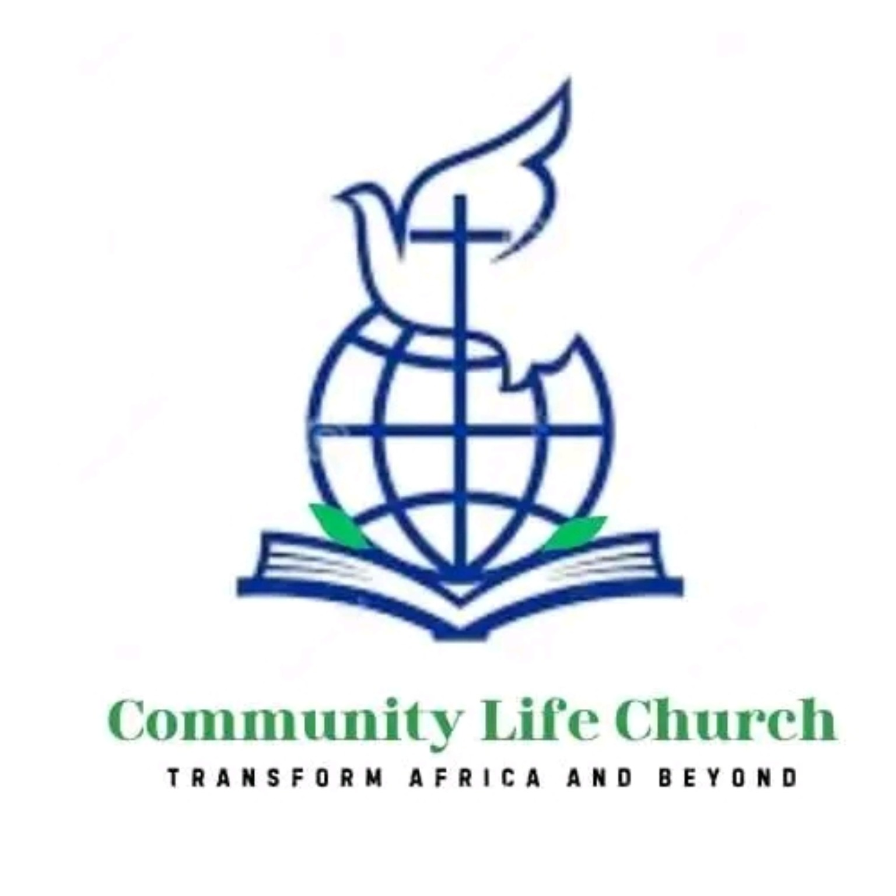
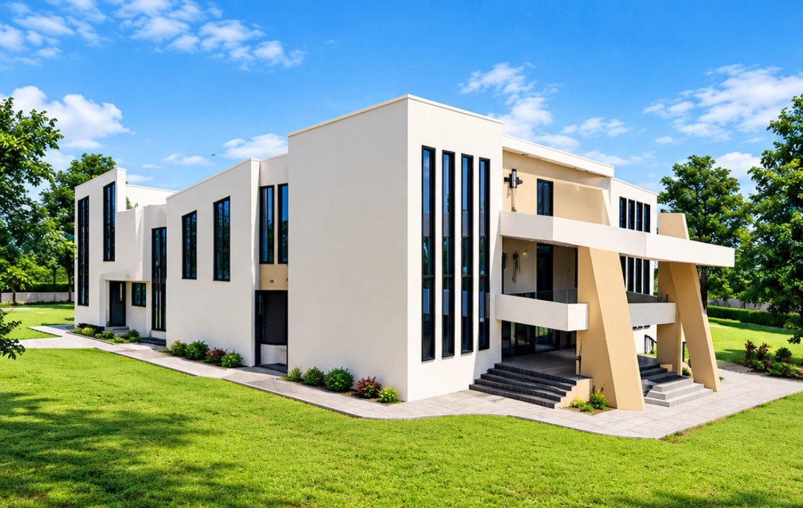
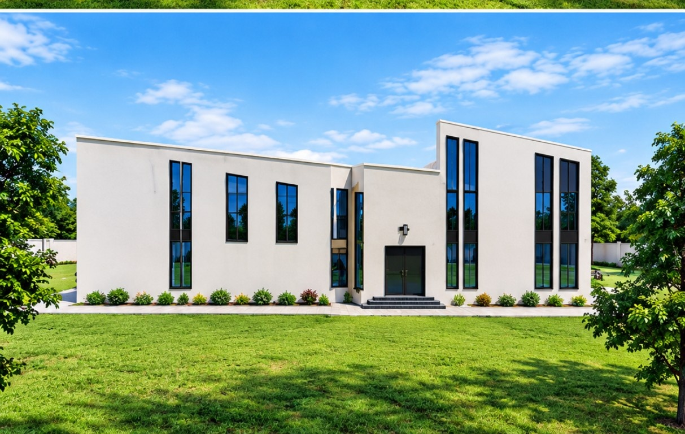

Youth Ministry
Engaging the younger generation through Bible study, mentorship, and community outreach.

COMMUNITY LIFE CHURCHMAMBOLEO • KENYA
A Christ-centred community committed to evangelism, spiritual growth, service and life transformation.
Join us for fellowship, worship, and the Word!
WHO WE ARE
“To become a life transforming centre, to transform Africa and beyond.”
“To evangelize, train and equip every soul for the work of ministry and the return of Christ.”
CHURCH LEADERSHIP
Welcome to Community Life Church! Led by Pastor Jeremiah and his wife Pastor Joyce Machio, our leadership is dedicated to serving God's flock, nurturing spiritual growth, and building a strong, loving community right here in Mamboleo and beyond.
WHAT GUIDES US
COME WORSHIP WITH US
SERVING TOGETHER
Engaging the younger generation through Bible study, mentorship, and community outreach.
Leading the congregation into deep, spirit-filled worship during services and afternoon sessions.
Nurturing children in the foundational teachings of Christ from an early age.
Empowering adults through spiritual growth, family support, and community leadership.
MEDIA
Relive moments from our vibrant afternoon worship experiences through our media galleries.
GIVE WITH PURPOSE
Support the work of ministry and building projects through our official church paybill.
Account Number
C722YOUR VOICE MATTERS
We value your feedback! Kindly let us know how your experience was during our fellowship.
BUILDING FOR THE FUTURE
Our proposed church building represents a vision for a growing community and a place for worship, ministry and fellowship.

